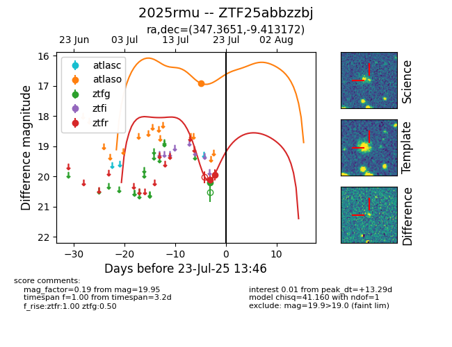

Target ZTF25abbzzbj at 2025-07-23 11:52, see:
FINK: fink-portal.org/ZTF25abbzzbj
Lasair: lasair-ztf.lsst.ac.uk/objects/ZTF25abbzzbj
ALeRCE: alerce.online/object/ZTF25abbzzbj
TNS: wis-tns.org/object/2025rmu
YSE: ziggy.ucolick.org/yse/transient_detail/2025rmu
alt names
ZTF25abbzzbj (ztf,fink)
2025rmu (tns,yse)
coordinates:
equatorial (ra, dec) = (347.3651,-9.41317)
galactic (l, b) = (64.4584,-60.12197)
photometry
last atlaso=16.91, ztfg=20.19, ztfr=19.95
1 atlaso, 1 ztfg, 2 ztfr detections
